When we first started Project 3, I was really nervous, as I had never considered myself good at hands-on tasks and having a good engineering vision. However, there is a Bulgarian saying- “When adversity knocks on your door, anything is possible.” In the soldering process, I first had trouble melting the solder in the right amount, as I was applying too much of it on the plate. However, after several unsuccessful attempts, I started getting better at melting the right amount of solder, such that it looked like a pyramid from the sides. After soldering all the parts from the electronic kit, I tested my alarm clock on my laptop, and it didn’t work immediately. I saw too much solder on two places of my plate, which might have created some joints. I fixed them and tried again, but it was still not working. Professor Krones helped me by giving me a new USB cable to try, and it turned out that this was the problem. Everything was working with the new USB cable, and Asa and I were ready to work together on the next step- designing a 3D-printed enclosure for the alarm clock. The measurements of our electronic alarm clocks were almost the same- 45 and 55 mm.
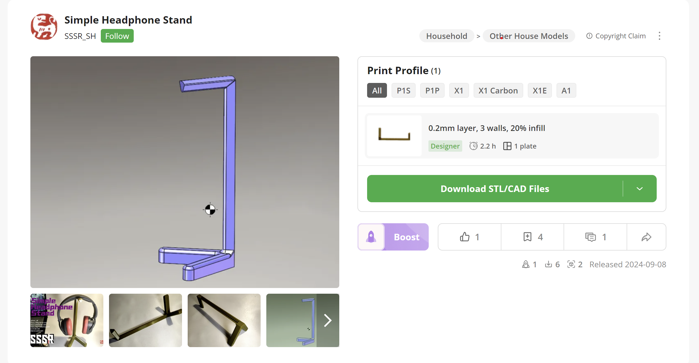
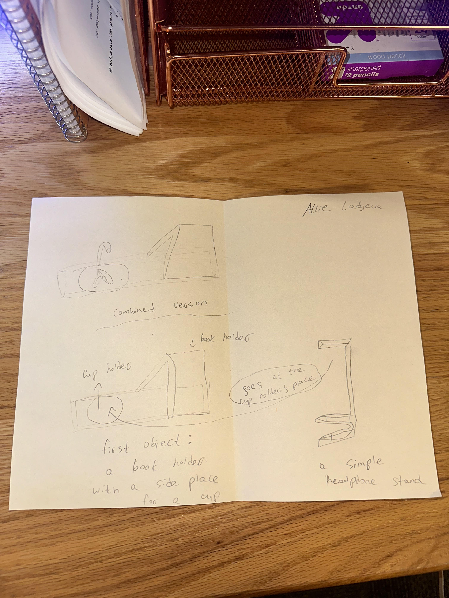
3D Print
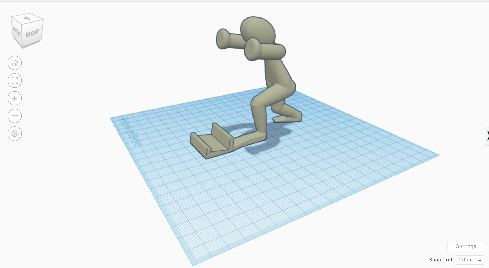
Using Fusion was definitely challenging, but it also made me feel like a professional engineer who could design much more complex models than I could in Tinkercad. I watched some short YouTube tutorials before class, but I mainly learned how to use Fusion when I was actually using it in class. I started by searching for another holder design on the “thangs.com” website, and I found a charming man acting as a support for an iphone or any small electronic device. It had the same features as the phone holder from my first design, but it looked much more artistic, polished, and multipurpose. I didn’t sketch it on paper, as it was really hard for me to draw the man, but I did visualize it in my head and played with the design in Fusion.
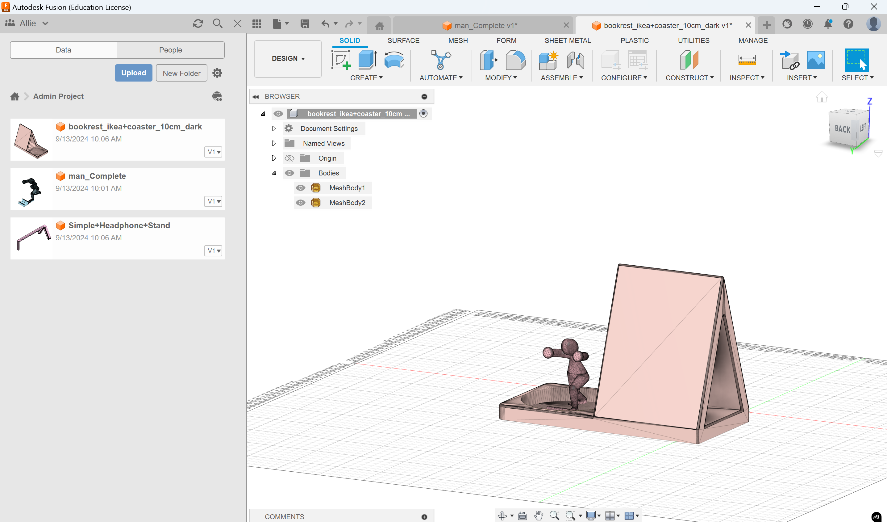
After downloading and opening Fusion, I selected the admin project folder from the home menu. I used the upload button to import both the bookholder and the manholder files. Also, I must mention here that I had two options for the manholder file- one complete and one incomplete. The incomplete file divided the man into upper and lower parts, which I could print separately to avoid 3D printing failures and then glue them together. However, I decided to use the complete version of the manholder file and print everything at once.
In Fusion, I had a much easier time navigating the different angles of the project than I did in Tinkercad. I used the x, y, and z-axis values to move the manholder on top of the cup holder of the bookholder, which wasn’t as time-efficient and easy to do compared to Tinkercad. However, I was able to move the two objects together and combine them using the Mesh-Modify menu at the top. I also managed to scale the bookholder and make it wider using the Solid-Modify menu. Afterward, I exported the file from Fusion on my laptop and opened it in PrusaSlicer.
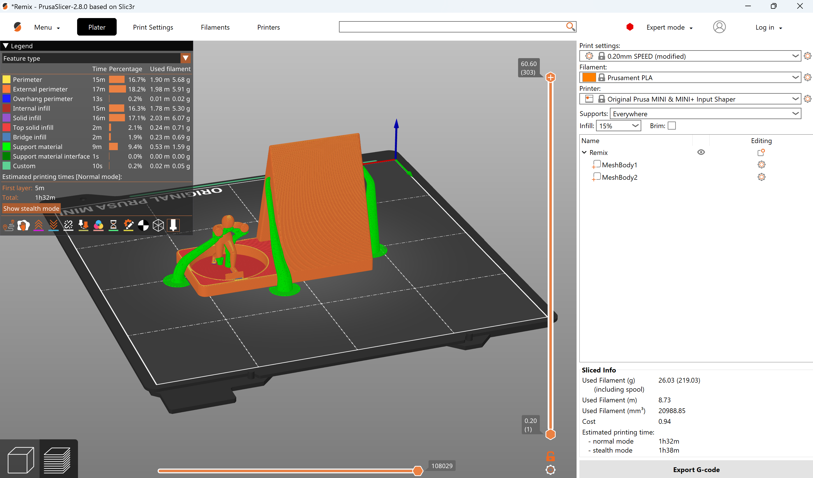
Again, when I opened the project in PrusaSlicer, I got a warning at the bottom, saying that I should add support to my object to prevent falling parts, and I added organic support once again. It was interesting that there was a lot of added organic support this time, even for the bookholder, but I decided to go with it. I made my 3D model remix smaller, sliced it and put it on a USB flash drive. The printing went smoothly at first, but it failed a bit in some places. The back of the person was a bit burned, and one of the organic supports was attached to the person’s hands and couldn’t be removed. Also, one of the organic supports was not printed out for some reason, and some extra layers of strings didn’t look good on my model.
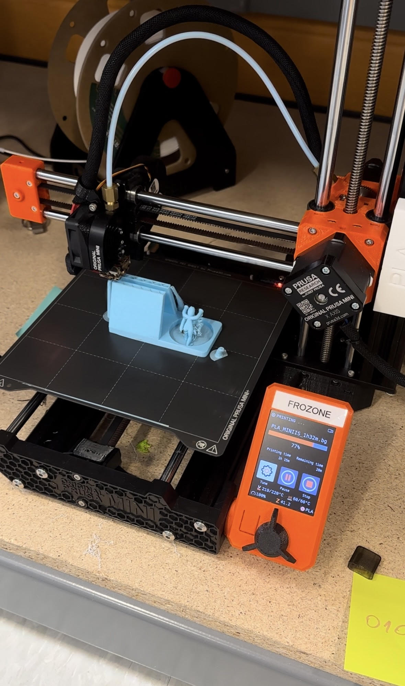
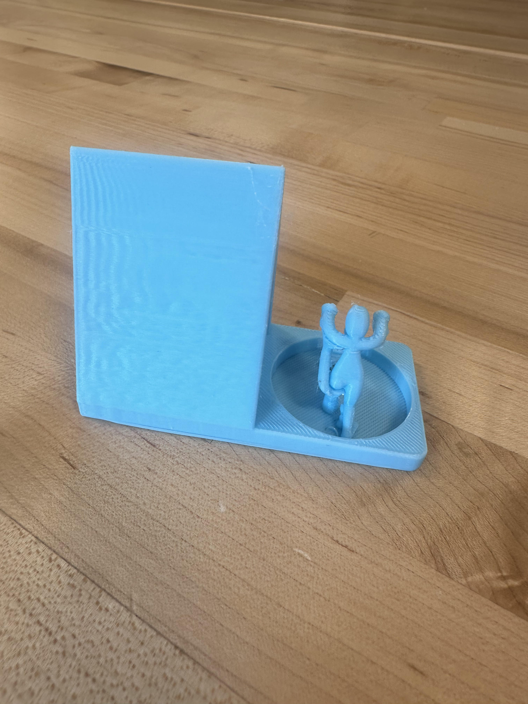
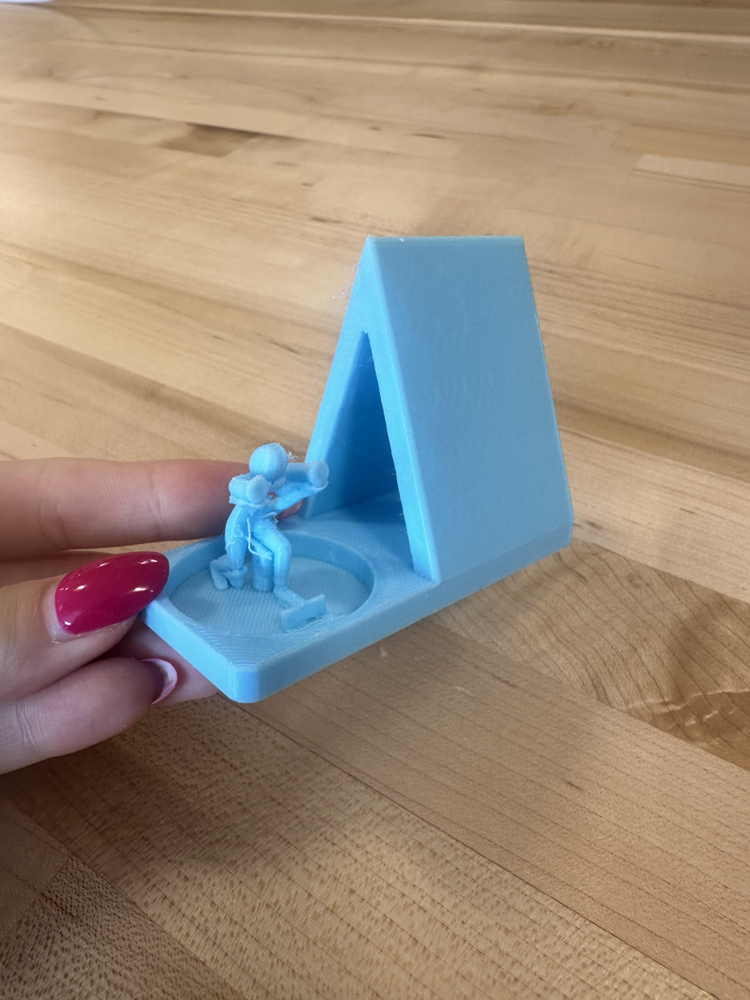
Reflecting on my second print, I believe it looks much better than my first print since it was more artistic, and the bookholder looked much better. However, I think there was a reason why the designers of the manholder model provided a file with separate parts; maybe it is just more likely to fail when printed at once. Also, I want to figure out how to remove extra organic support, which is automatically generated in PrusaSlicer. I am pretty satisfied with my 3D prints from Project 2, and I look forward to becoming an expert in using Fusion and Tinkercad in the following projects!
Laser Cut
Using Tinkercad was definitely a fun and inspiring experience for me. I always thought I was not good at designing things simply because I couldn’t draw and visualize things well, but after watching the Tinkercad tutorial, I felt like I could create any model I wanted. In class, I started researching different 3D models on the “thangs.com” website as I brainstormed ideas about making something I need and can use daily. I found a bookholder 3D model, which seemed fascinating to me since I am obsessed with books, and I could definitely see it on my desk. The more fascinating thing was that the bookholder had an empty space on the side for an object, such as a cup, where I thought, "Why don’t I find another 3D model to mix at that spot?”.
After brainstorming what would look best and be handy at that spot, I searched for a 3D model of a phone stand, as I could definitely put my phone on my side. I found an adorable headphone stand, and my next step was sketching everything on paper to see if it would look nice. I loved the sketch and decided to try the 3D remix on Tinkercad!
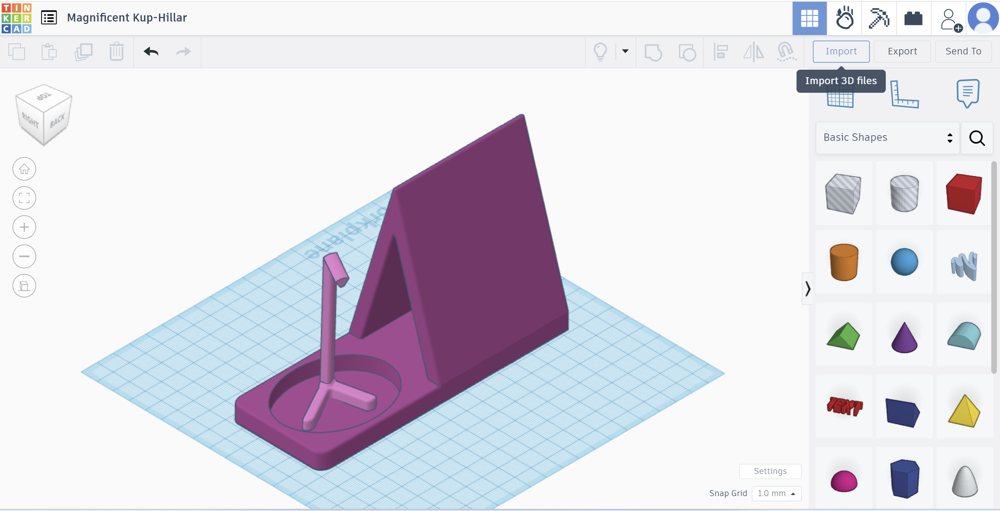
I opened Tinkercad and imported the two STL files into my project workspace. I used the cube with the different labels on the sides to look at my project from different axes and figure out where I should put the phone stand. I had some trouble navigating the different sides, as the cube bugged often, but I finally managed to place the phone stand on the cup spot of the bookholder. I grouped the two objects, as I wanted to make sure that the phone stand would be merged perfectly with the bookholder and not just fly in the air. I also changed the height of the stand so that it is a little shorter than the bookholder, as this was the best-looking design for me. Afterward, I exported the file from Tinkercad to my laptop and opened it in PrusaSlicer.
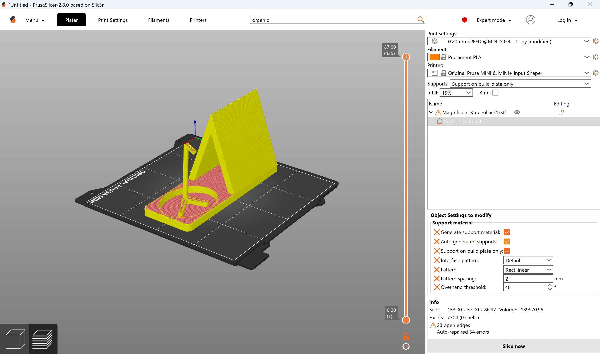
As I opened the project in PrusaSlicer, I got a warning at the bottom, saying that I should add support to my object to prevent falling parts. Initially, I didn’t know what that meant, but thanks to Professor Krones and Vincent’s help, I added organic support from the settings, which supported the top part of my phone stand. Since my model was relatively big at this point and needed too much time to be printed, I scaled it down to a printing time of approximately one hour and a half. I ensured all the correct settings were on and sliced my object. Then, I got a 3D Printing Job number and moved the file to a USB flash drive so that I could print it out on a 3D printer.
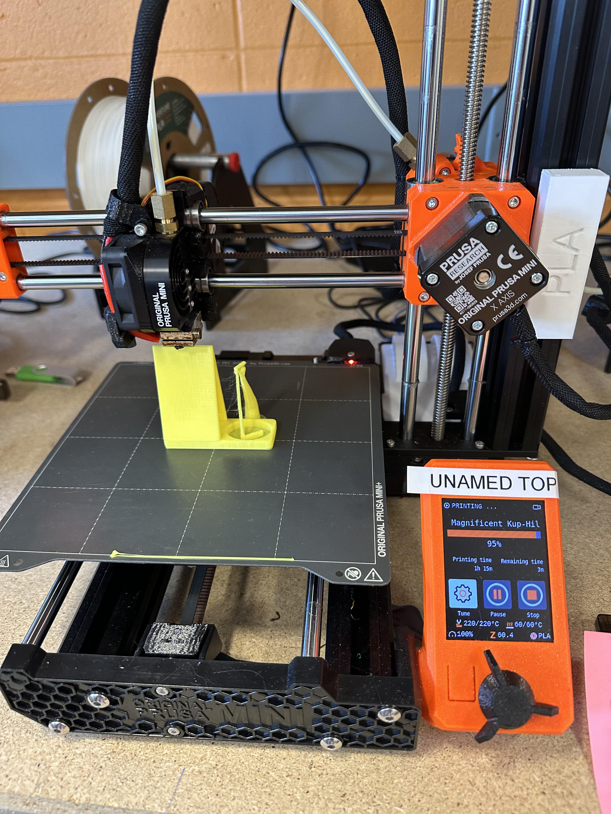
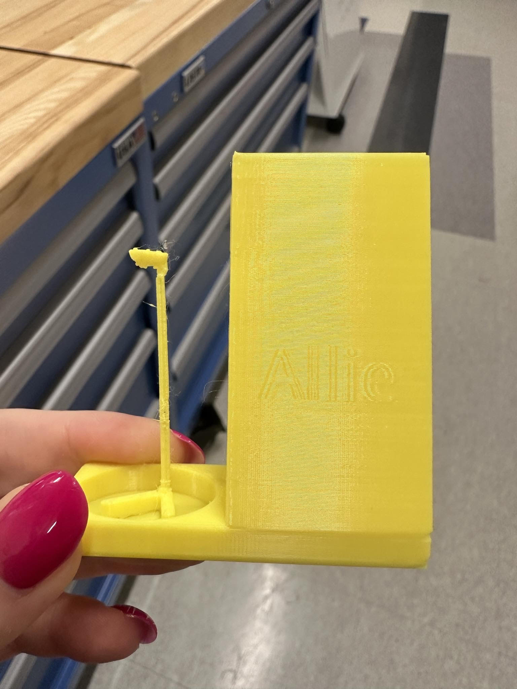
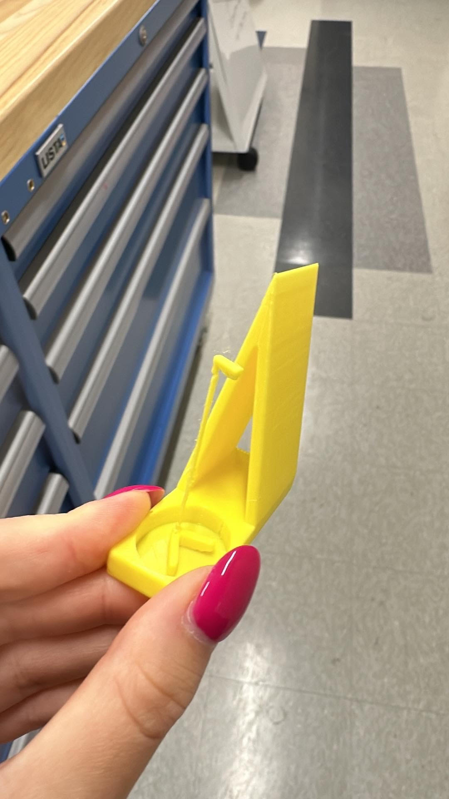
Everything went smoothly, and my model was printed out, but there were some imperfections that I could have designed better. The stick of the phone holder was really thin and could easily break, so I had to design it a bit thicker, especially if it was supposed to support a phone. Also, my bookholder would have looked better if it was a bit wider. However, I decided to try a different 3D remix for my second model in Fusion, as I felt that the phone holder was too simple, and I was aiming for a more artistic design.